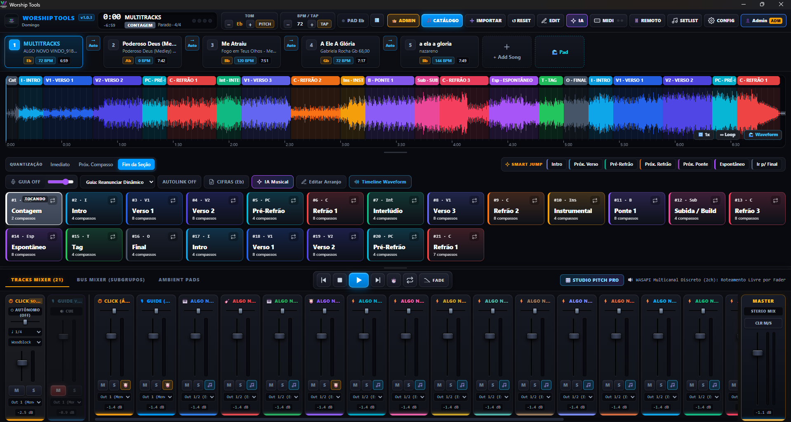

Software de playback multitracks de alta performance para macOS e Windows. Motor WASAPI de baixa latência, click autônomo, guia inteligente e sincronização em nuvem.

Construído em Rust para garantir estabilidade e zero travamentos.
Roteamento livre e processamento direto sem latência visual.
Download nativo integrado direto do Backblaze B2. Suas tracks disponíveis em segundos.
Receba novos recursos automaticamente sem precisar reinstalar o sistema.
O motor completo do Worship Tools para rodar suas tracks locais.
A experiência definitiva com servidor cloud dedicado integrado.